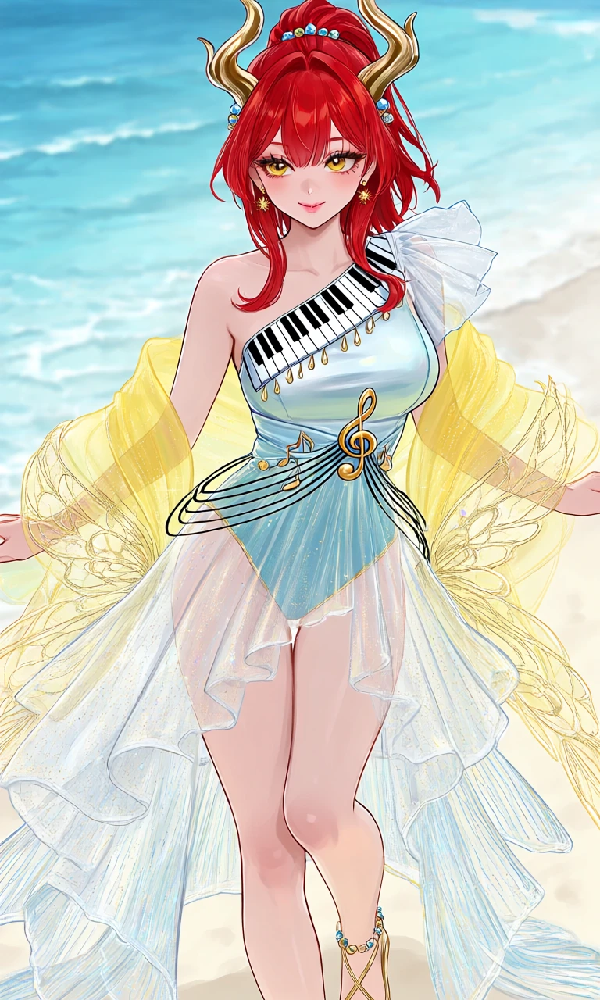
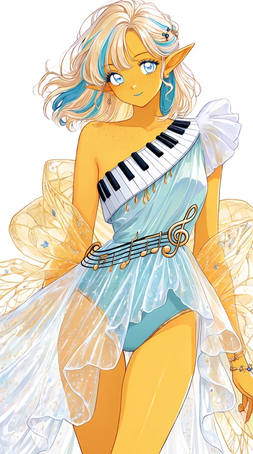

Seafoam Sonata

Outfit Prompt
An elegant, playful summer-inspired musical fantasy dress, combining the flowing silhouette of a delicate asymmetrical gown with the lightness of luxurious beachwear.
The fitted, asymmetrical one-shoulder bodice is made of pearlescent white and pale aqua-blue satin, with a diagonal decorative band of alternating black and white piano keys crossing from one shoulder toward the opposite waist. Tiny golden teardrop ornaments hang delicately beneath the musical band, resembling shimmering sunlight and the metal tines of a kalimba.
One shoulder features a soft, translucent white chiffon ruffle, while the opposite shoulder remains bare. A delicate golden treble-clef ornament decorates the waist, surrounded by gracefully curling black musical staff lines and tiny note-shaped embellishments.
The skirt is a short, asymmetrical, flowing overskirt made entirely of sheer, transparent, glittering chiffon and fine mesh, shimmering with tiny golden and iridescent blue sparkles. The fabric is nearly weightless, with soft overlapping waves that flutter freely around the hips and thighs. The front is shorter, while the sides and back extend into longer, cascading transparent panels resembling flowing water and summer breezes.
Underneath the transparent skirt is a clearly visible, elegant high-waisted bikini bottom in soft aqua-blue with delicate gold trim, designed to complement the bodice. The overall outfit is airy, summery, feminine, and tastefully playful rather than a heavy formal gown.
A long, transparent sunshine-yellow shawl is draped loosely around the upper arms, with its flowing ends extending behind the outfit. The shawl features intricate, delicate fairy-wing patterns woven throughout the translucent fabric, with fine golden veins and subtle iridescent glitter.
Accessories include tiny golden sunburst earrings, a delicate anklet decorated with miniature musical notes, and elegant open-toe sandals with thin gold straps.
Small blue and golden decorative hair beads are arranged as delicate hair accessories.
Outfit Examples



